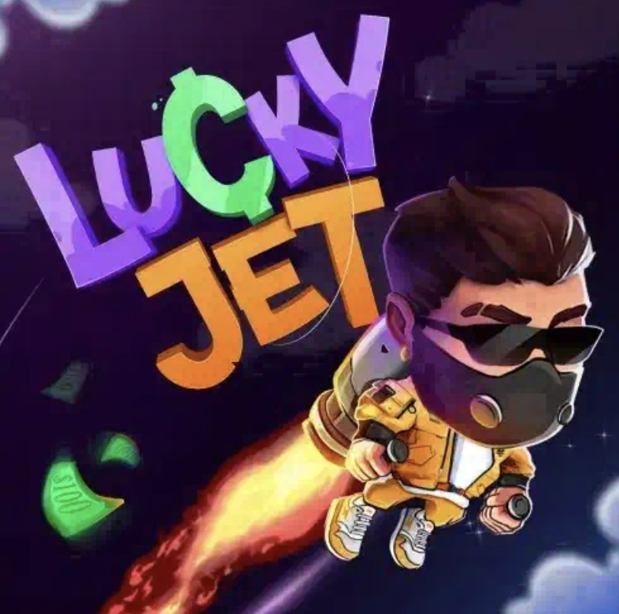

Авиатор Игра
Ставка в игре умножается в 1000 раз!
ПРОМОКОД: 1GAMEWIN

ПРОМОКОД: 1GAMEWIN
Найти игру Luсky Jet можно на сайте 1Win, а также на партнерских площадках компании. Это аналог игры Авиатор, только вместо самолета тут летает счастливчик Джо с реактивным рюкзаком за спиной и увеличивает выигрыш. Главный герой взлетает, а с набором высоты увеличивается и коэффициент. Если пользователь вовремя остановит игру, он получит выигрыш, который будет больше первоначальной в несколько раз. Основная задача игрока – остановить персонажа до того момента, как он вылетит за пределы экрана. Если он все таки улетит, выигрыш пропадет. Игра также доступна в бесплатном демо режиме – можно потренироваться и освоить правила проекта. LuсkyJet 1win – иновационная игра, которая не оставит равнодушным ни одного поклонника краш игр.
1. Множитель в игре стартует с x1, и растет, пока летит Джо.
2. Чтобы сделать ставку или две сразу, достаточно нажать на кнопку «Ставка», в нижней части экрана.
3. Чтобы остановить игру пока парень не улетел и получить выигрыш нужно нажать кнопку "Вывод". Ставка будет умножена на коэффициент, до которого долетел персонаж.
4. Но стоит учитывать важный момент, что в игре Luсky Jet потерять ставку также просто, как и сорвать джекпот. Самое главное - это успеть нажать на кнопку до того момена, как Джо улетит за пределы графика.
Официальный сайт игры Luсky Jet представлен известным провайдером 1 win.
Пройдите регистрацию в 1win, на главной панели нажмите на вкладку "Игры" и в открывшимся окне вы найдете Lucky Jet в 1WIN. Или используйте встроенный поиск.
При регистрации можно получить бонус на депозит, использовав промокод 1GAMEWIN
Играть в Luсky Jet на деньги не сложно – достаточно запустить игру, дождаться загрузки, выбрать размер ставки и запустить полет. Особенность проекта, заключается в простом графике, на котором демонстрируется взлетающий персонаж.
Лаки Джет – аналог известной игры Авиатор с более высокими коэффициентами и улучшенным геймплеем. Азартное развлечение доступно на официальном сайте букмекера 1Win. Игрокам следует потренироваться в демоверсии Luсky Jet.
Демо версия – это режим, где можно играть без регистрации. Достаточно перейти на площадку, выбрать и запустить игру. Ставки игрок делает за демо монеты, их количество никогда не заканчивается.
Lucky Jet: - это улучшенная версия игры Авиатора на деньги, правила схожи. В игре улучшили графику, изменили анимацию и увеличили коэффициенты! В новой игре полет идет на большие иксы и редко обрывается в самом начале, что так расстраивало многих игроков в Авиатор. За небольшой период времени появилось тысячи игроков, которые уже успели сорвать джекпот. Пришла и ваша очередь!
В игре Luсky Jet персонаж взлетает моментально, а средняя длительность одного раунда 1 - 60 секунд, пока продолжается полет.
В Luсky Jet ставки начинаются от пяти рублей. Новичкам лучше не ставить большие ставки.
Минимальный равен x1, максимальный – x200.
Нет, игра очень простая, справится каждый. Но стоит учитывать, что играть в игру можно только с 18 лет.